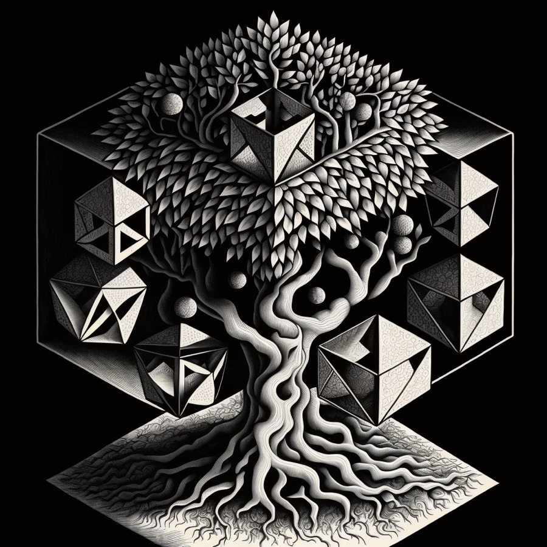

The Library of HylographGraphs and Chains of Reason
Libraries that Hylograph draws but that stand on their own — graph algorithms and justification-based proofs, rendered as pictures.
- The Honeycomb graphs-extra
- Decomposition Explorer graphs-extra
- Explainable Sudoku purescript-jtms
- Kibitzer cluedo · jtms


The Honeycomb graph pathfinding

Decomposition structural analysis

Explainable Sudoku proofs as one graph
K
Kibitzer —
Cluedo deductions
Cluedo deductions
Kibitzer whodunit proofs ↗

The Library gateway

Data Vis & Graphics

Code Typography